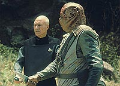
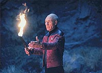
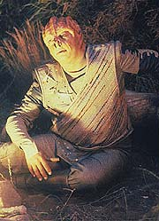
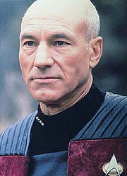
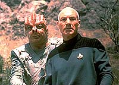

|
MANCHETE
DO EPISDIO
Pea
imprime mais realismo fico de
Jornada ao mostrar pensar aliengena
Episdio
anterior | Prximo
episdio
Sinopse:
Data Estelar: 45047.2.
A Enterprise recebe um sinal das "Crianas de Tama", uma
raa aliengena que no conhecida por ter um passado violento,
mas cuja linguagem considerada "incompreensvel" para
os humanos. Encontrando os Tamarianos em rbita de um planeta
desabitado, Picard e sua tripulao tentam estabelecer relaes
diplomticas. Mas, mesmo aps vrias tentativas de dilogo entre
o capito da Enterprise e Dathon (seu contraparte Tamariano),
nenhum dos dois consegue entender o outro. De repente, Dathon se
vira para ele, armado com duas adagas, e os dois capites so
imediatamente transportados para a superfcie do planeta.
Riker e o resto da tripulao descobrem que impossvel
teleportar Picard de volta nave, graas a um campo gerado pela
nave Tamariana. Na superfcie, Dathon continua a oferecer a Picard
uma de suas adagas, mas o capito da Enterprise recusa a oferta,
alegando que no lutaria com o aliengena.

Dathon na verdade no quer lutar. Suas boas intenes so
comprovadas quando, ao cair da noite, o capito Tamariano oferece a
Picard fogo para combater o frio noturno, ajudando o humano a
conseguir dormir. Ao acordar, na manh seguinte, Picard no
encontra Dathon. Ele comea a examinar os objetos pessoais do aliengena,
na tentativa de entender suas intenes. Subitamente, sua
investigao interrompida pela voz de Dathon seguida pelo
rugido de um animal.
Perseguido por um bicho grande e feroz, Dathon volta a oferecer uma
adaga a Picard, que desta vez aceita. Ao tentarem se comunicar
para estabelecer uma luta mais eficiente contra o animal, Picard
descobre que os Tamarianos se comunicam por exemplos, e os nomes prprios
e lugares que eles citam so referncias a situaes de sua histria.
Iluminado por esse princpio, Picard capaz de iniciar uma
comunicao com Dathon, que responde entusiasticamente.
Enquanto isso, Riker envia Worf e um grupo avanado superfcie,
por meio de uma nave auxiliar, para resgatar o capito. A nave,
entretanto, bloqueada por um tiro perfeito da nave Tamariana, que
danifica o veculo impedindo que ele possa chegar superfcie.

Enquanto isso, Picard e Dathon se coordenam para combater a
criatura, mas seus esforos so interrompidos por uma tentativa de
teleportar o capito da Enterprise de volta nave. Ele
desmaterializado momentaneamente, e Dathon, sozinho, fica vulnervel
ao ataque do animal.
Enquanto o capito Tamariano encontra morte lenta, Picard descobre
que a situao de dois lderes se unindo para combater um inimigo
comum parte da mitologia aliengena, e subitamente percebe que
Dathon o levou ao planeta especificamente para lutar contra a besta
junto dele e iniciar relaes diplomticas entre as duas
culturas.

Aps inmeras tentativas, a tripulao finalmente consegue
teleportar Picard. De volta nave, ele consegue se comunicar com
os Tamarianos e evitar um combate entre as duas naves. Usando o mtodo
aliengena de comunicao, ele conta como Dathon morreu e
expressa sua admirao pelo capito aliengena.
O conflito evitado e Picard fica apenas questiona, caso os papis
fossem invertidos, se ele seria capaz de dar a vida para tentar
estabelecer comunicao com outra espcie.
Comentrios:
"Darmok"
um episdio maravilhoso porque consegue combinar perfeitamente
os elementos mais fantasiosos de Jornada nas Estrelas com uma
histria que reflete um contexto mais realista do ponto de vista da
fico cientfica. Afinal de contas, seria mesmo muito
surpreendente se a maior parte dos aliengenas da galxia pensasse
de forma to similar aos humanos como geralmente acontede em Jornada.
Embora o tipo de raciocnio desenvolvido pelos Tamarianos oferea
alguns empecilhos ao surgimento de idias mais abstratas, necessrias
ao aprimoramento tecnolgico que os levaria eventualmente ao espao,
ainda assim o valor do conceito aplicado ao episdio (o
reconhecimento de que o modo de pensar de um aliengena deve ser,
por definio, "aliengena") inestimvel.
No fosse s pelo belo contedo de fico cientfica, o episdio
tambm seria um vencedor pela prpria estrutura da narrativa. O
envolvimento que a audincia estabelece com os personagens,
principalmente a empatia emanada do capito Dathon (crdito para
Paul Winfield, que interpreta seu personagem com fora e emoo
incrveis), admirvel.

O roteiro construdo para que soframos com as mesmas
dificuldades de Picard para entender aqueles dilogos amalucados
das "Crianas de Tama", de modo a nos transmitir o mesmo
senso de pioneirismo, explorao e mistrio vivido pelos
tripulantes da Enterprise.
O final da histria tocante. Depois de todo o esforo para
estabelecer comunicao, a morte de Dathon mais um lembrete do
custo que h em cada grande descoberta --muitas vezes envolvendo de
fato a morte de muitas pessoas. O esforo do capito, entretanto,
no foi em vo, como Picard pde demonstrar na cena final do episdio.
Alis, o senso de camaradagem que se estabelece entre os dois lderes
mais um dos aspectos notveis desse roteiro. interessante ver
um pouco mais do lado "explorador e intelectual" do capito
Picard, ao ser introduzido em uma situao de "intercmbio
cultural forado". E nem preciso elogiar mais o lado nobre
de Dathon, se sacrificando pelo entendimento entre sua cultura e a
da Federao.
Do ponto de vista tcnico, o episdio muito bem executado. Alm
de uma direo competente de Winrich Kolbe, temos belos efeitos
especiais, como o da criatura na superfcie --sutil o suficiente
para que no a vejamos em detalhes, mas forte o suficiente para que
saibamos que ela est por l e pronta para fazer picadinho dos
dois capites. Em termos de tomadas espaciais, fica apenas a crtica
para os disparos de feiser da Enterprise pelos tubos de torbedos fotnicos,
um erro bobo e que poderia ter sido evitado facilmente.
Fica tambm um destaque para a bela maquiagem dos Tamarianos, que
apesar do uso extenso de prteses de borracha, permite que Winfield
expresse todo o seu talento interpretativo. O figurino (que mostra,
inclusive, a estria de um uniforme "alternativo" de
Picard, blusa cinza e casaco vermelho, que ele usaria ao longo de
toda a quinta temporada) tambm no deixa por menos.

Finalmente, vale apontar que esse episdio tem uma caracterstica
especial: apesar da incrvel qualidade, ele no resiste a mltiplas
assistidas. Por ter como essncia da histria o desvendamento do
mistrio Tamariano (por parte de Picard e da audincia), uma vez
que descobrimos o que afinal "Darmok e Jilad em Tanagra",
boa parte da magia acaba se perdendo. Resta apenas a apreciao
das brilhantes interpretaes e a reflexo sobre o quo mais
complicado do que ligar um tradutor universal pode ser o contato com
uma cultura aliengena.
Citaes:
Dathon - "Darmok
and Jilad in Tanagra."
("Darmok e Jilad em Tanagra.")
Trivia:
 O capito Tamariano Dathon interpretado por um velho conhecido
dos fs de Jornada. Trata-se de Paul Winfield, o capito da
USS Reliant (Jornada nas Estrelas II), Clark Terrell.
O capito Tamariano Dathon interpretado por um velho conhecido
dos fs de Jornada. Trata-se de Paul Winfield, o capito da
USS Reliant (Jornada nas Estrelas II), Clark Terrell.
O episdio dirigido por Winrich Kolbe, o mesmo diretor de "All
Good Things...", o episdio final da Nova Gerao.
Kolbe dirigiu ainda o episdio piloto de Voyager, "Caretaker".
A atriz Ashley Judd interpreta aqui a alferes Robin Lefler. A Warner
acaba de anunciar que vai produzir um filme com as aventuras da
Mulher Gato e Ashley, de sucessos como "Risco Duplo" e
"Beijos Que Matam", vai interpretar a personagem, que j
fez sucesso com Michelle Pfeiffer. A atriz tem um currculo
respeitado com vrios filmes de sucesso, como em "Smoke",
"Fogo Contra Fogo", ambos em 1995, e em "Tempo de
Matar", em 1996. Ashley ainda atuou no filme para TV
"Norma Jean and Marylin", fazendo o papel de Marylin
Monroe jovem. Ganhou por essa interpretao uma nomeao ao Emmy.
A sua personagem na Nova Gerao, alferes Lefler, ainda
voltar a aparecer no episdio "The
Game", desta mesma temporada.
Repare no incrvel "blooper" deste episdio, quando a
Enterprise dispara uma rajada feiser diretamente do lanador de
torpedos!!!
Ficha
tcnica:
Histria de Philip Lazebnik e
Joe Menosky
Roteiro de Joe Menosky
Direo de Winrich Kolbe
Exibido em 30/09/1991
Produo: 102
Elenco:
Patrick Stewart como
Jean-Luc Picard
Jonathan Frakes como William Thomas Riker
Brent Spiner como Data
LeVar Burton como Geordi La Forge
Michael Dorn como Worf
Gates McFadden como Beverly Crusher
Marina Sirtis como Deanna Troi
Elenco convidado:
Paul Winfield como
capito Dathon
Richard James como o primeiro-oficial Tamariano
Colm Meaney como Miles Edward O'Brien
Ashley Judd como alferes Robin Lefler
Episdio
anterior | Prximo
episdio
|